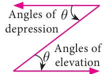
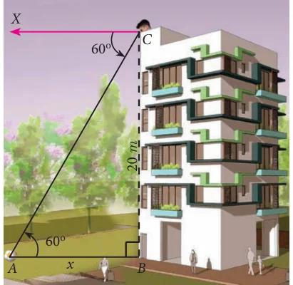
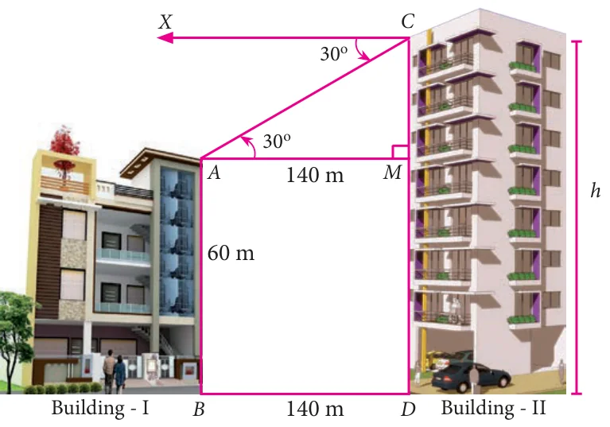
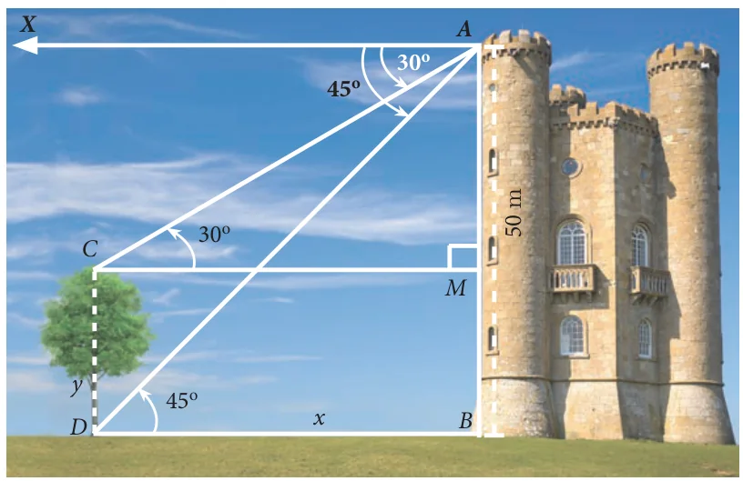
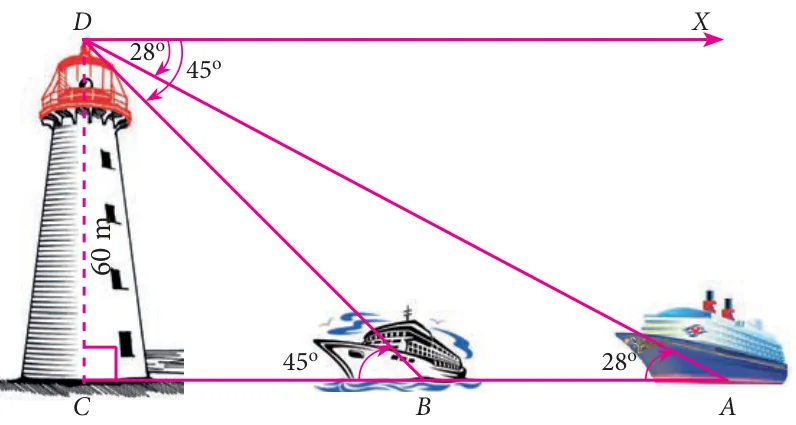
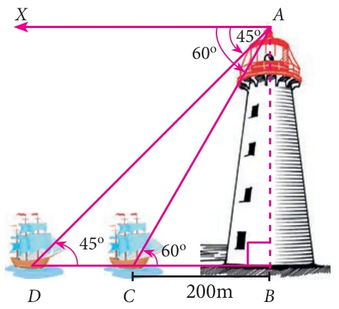

In this section, we try to solve problems when Angles of depression are given.
Note

Angle of Depression and Angle of Elevation are equal because they are alternative angles.
Example 6.26
A player sitting on the top of a tower of height 20 m observes the angle of depression of a ball lying on the ground as 60°. Find the distance between the foot of the tower and the ball. (\(\sqrt{3} = 1.732\))
Solution

Let \(BC\) be the height of the tower and \(A\) be the position of the ball lying on the ground. Then,
\(BC = 20\text{ m and } \angle XCA = 60^\circ = \angle CAB\)
Let \(AB = x\) metres.
In the right angled \(\Delta ABC\),
\(\tan 60^\circ = \dfrac{BC}{AB}\)
\(\sqrt{3} = \dfrac{20}{x}\)
\(x = \dfrac{20 \times \sqrt{3}}{\sqrt{3} \times \sqrt{3}} = \dfrac{20 \times 1.732}{3} = 11.55\text{ m.}\)
Hence, the distance between the foot of the tower and the ball is 11.55 m.
Example 6.27
The horizontal distance between two buildings is 140 m. The angle of depression of the top of the first building when seen from the top of the second building is 30°. If the height of the first building is 60 m, find the height of the second building. (\(\sqrt{3} = 1.732\))
Solution

The height of the first building \(AB = 60\) m. Now, \(AB = MD = 60\) m
Let the height of the second building \(CD = h\). Distance \(BD = 140\) m
Now, \(AM = BD = 140\) m
From the diagram,
\(\angle XCA = 30^\circ = \angle CAM\)
In the right angled \(\Delta AMC\), \(\tan 30^\circ = \dfrac{CM}{AM}\)
\(\dfrac{1}{\sqrt{3}} = \dfrac{CM}{140}\)
\(CM = \dfrac{140}{\sqrt{3}} = \dfrac{140\sqrt{3}}{3}\)
\(= \dfrac{140 \times 1.732}{3}\)
\(CM = 80.83\)
Now, \(h = CD = CM + MD = 80.83 + 60 = 140.83\)
Therefore, the height of the second building is 140.83 m
Example 6.28
From the top of a tower 50 m high, the angles of depression of the top and bottom of a tree are observed to be 30° and 45° respectively. Find the height of the tree. (\(\sqrt{3} = 1.732\))
Solution
The height of the tower \(AB = 50\) m
Let the height of the tree \(CD = y\) and \(BD = x\)
From the diagram, \(\angle XAC = 30^\circ = \angle ACM\) and \(\angle XAD = 45^\circ = \angle ADB\)

In the right angled \(\Delta ABD\),
\(\tan 45^\circ = \dfrac{AB}{BD}\)
\(1 = \dfrac{50}{x} \Rightarrow x = 50\text{ m}\)
In the right angled \(\Delta AMC\),
\(\tan 30^\circ = \dfrac{AM}{CM}\)
\(\dfrac{1}{\sqrt{3}} = \dfrac{AM}{50} \quad [\because DB = CM]\)
\(AM = \dfrac{50}{\sqrt{3}} = \dfrac{50\sqrt{3}}{3} = \dfrac{50 \times 1.732}{3} = 28.87\text{ m.}\)
Therefore, height of the tree \(= CD = MB = AB - AM = 50 - 28.87 = 21.13\) m
Example 6.29
As observed from the top of a 60 m high lighthouse from the sea level, the angles of depression of two ships are \(28^\circ\) and \(45^\circ\). If one ship is exactly behind the other on the same side of the lighthouse, find the distance between the two ships. (\(\tan 28^\circ = 0.5317\))
Solution

Let the observer on the lighthouse \(CD\) be at \(D\).
Height of the lighthouse \(CD = 60\) m
From the diagram,
\(\angle XDA = 28^\circ = \angle DAC\) and
\(\angle XDB = 45^\circ = \angle DBC\)
In the right angled \(\Delta DCB\), \(\tan 45^\circ = \dfrac{DC}{BC}\)
\(1 = \dfrac{60}{BC} \Rightarrow BC = 60\text{ m}\)
In the right angled \(\Delta DCA\), \(\tan 28^\circ = \dfrac{DC}{AC}\)
\(0.5317 = \dfrac{60}{AC} \Rightarrow AC = \dfrac{60}{0.5317} = 112.85\)
Distance between the two ships \(AB = AC - BC = 52.85\) m
Example 6.30
A man is watching a boat speeding away from the top of a tower. The boat makes an angle of depression of 60° with the man’s eye when at a distance of 200 m from the tower. After 10 seconds, the angle of depression becomes 45°. What is the approximate speed of the boat (in km / hr), assuming that it is sailing in still water? (\(\sqrt{3} = 1.732\))
Solution

Let \(AB\) be the tower.
Let \(C\) and \(D\) be the positions of the boat.
From the diagram,
\(\angle XAC = 60^\circ = \angle ACB\) and
\(\angle XAD = 45^\circ = \angle ADB,\ BC = 200\text{ m}\)
In the right angled \(\Delta ABC\), \(\tan 60^\circ = \dfrac{AB}{BC}\)
\(\Rightarrow \sqrt{3} = \dfrac{AB}{200}\)
we get \(AB = 200\sqrt{3} \quad \ldots(1)\)
In the right angled \(\Delta ABD\), \(\tan 45^\circ = \dfrac{AB}{BD}\)
\(\Rightarrow 1 = \dfrac{200\sqrt{3}}{BD}\) [by (1)]
we get, \(BD = 200\sqrt{3}\)
Now, \(CD = BD - BC\)
\(CD = 200\sqrt{3} - 200 = 200(\sqrt{3} - 1) = 146.4\)
It is given that the distance \(CD\) is covered in 10 seconds.
That is, the distance of 146.4 m is covered in 10 seconds.
Therefore, speed of the boat \(= \dfrac{\text{distance}}{\text{time}}\)
\(= \dfrac{146.4}{10} = 14.64\text{ m/s} \Rightarrow 14.64 \times \dfrac{3600}{1000}\text{ km/hr} = 52.704\text{ km/hr}\)